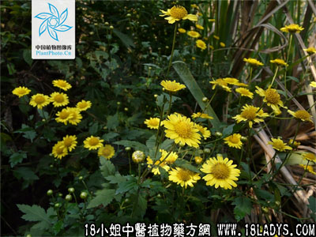

(本文解释权归中药材天地网兄弟站-18小姐中医植物药方网所有,如需转载请注明出处)
六耳苓(中药材植物名:山黄菊)(植物科目:菊科)

别名：鹿耳苓。
植物名：山黄菊。
生长环境：本品为多年草本。为一种野草，常见于草地或荒山上。
分布：我国南部地区，广东以中南和南部较多。
入药部分：全株。
采集期：夏、秋。
自采地点：山岗。
性味：性平、味辛、气香。
功能：祛风消肿、散瘀血、理跌打、解蛇毒。
主治、用量和用法：1、风湿：干用1至2两，清水煎服及外洗患处；2、风火牙痛：适量，煎服，含漱；3、皮肤湿毒：适量，煎水外洗；4、疮毒、烂肉：用如上法；5、跌打，配伍用。
验方：（治跌打方）六耳苓1两、九层塔5钱、入地金牛1两、泽兰叶5钱、血见愁5钱，为末，加酒煮热，外敷患处。
（方解）本方以六耳苓、九层塔通利血脉。入地金牛根祛风止痛，泽兰散瘀消肿，血见愁止血，加酒煮以行血，合为通血脉、止痛、散瘀、理血之剂。
（方歌）跌打良方六耳苓，九层塔与金牛根，血见愁添泽兰叶，为末酒敷瘀肿清。
参考资料：《广东省中医验方交流汇编》内载洗外痔方：冬青头、榕树须i、六耳苓各适量、水煎至蚊沸，候温，坐盆内浸之。
(本文解释权归中药材天地网兄弟站-18小姐中医植物药方网所有,如需转载请注明出处)